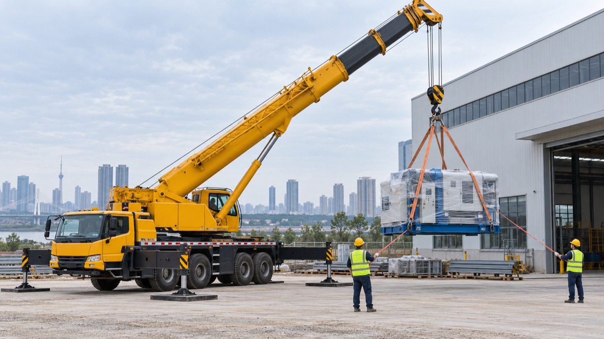

可咨询的汽车吊吨位
只安排汽车吊，可按需求协调固定合作车源；具体车辆、档期及现场适用性请与周经理逐单确认。
8 吨25 吨35 吨50 吨80 吨100 吨130 吨200 吨300 吨500 吨800 吨
服务与联系
服务区域
公司办公所在区：武汉市汉阳区。
以汉阳区为重点，服务武汉经开区（沌口）、蔡甸区、硚口区、东西湖区、江岸区、江汉区、武昌区、洪山区和江夏区。武汉市内跨区需求，以及向周边延伸约10—30公里的项目，均可联系确认车辆与档期。
夜间咨询
夜间可联系沟通需求。是否能派车，以实际车辆和人员安排为准。
电话微信同号
联系周经理：15972016550。发现场照片可先电话沟通，再添加微信。
外地客户询价，准备这 4 项
- 地点与时间：施工地址、进场日期、预计作业时段。
- 吊装物：名称、重量、尺寸、吊点等已知信息。
- 现场条件：进场道路、场地空间、作业高度与现场照片。
- 报价需求：预计作业时长，以及是否有等待、夜间等安排。
吨位和报价需要结合实际工况确认；请勿仅凭吊装物重量选择车辆。
武汉吊车出租服务说明 → 武汉服务区域与派车咨询 → 查看外地客户询价指南 汽车吊吨位咨询指南 → 吊装半径与作业高度询价说明 → 武汉25吨汽车吊出租咨询 → 汉阳汽车吊询价要点 → 武汉夜间汽车吊咨询 → 武汉经开区（沌口）汽车吊询价 → 可复制的询价信息模板 → 汽车吊进场条件清单 → 汽车吊出租常见问题 →
汽车吊作业场景示意

公开询价指南
了解询价前需要准备的信息，便于外地来武汉的客户沟通汽车吊需求。
以上为询价知识内容，使用AI辅助制作，不是施工实拍或客户案例。业务咨询可拨打本页公开接单电话15972016550。
联系嘉豪吊装
以汉阳区为重点，服务武汉经开区（沌口）、蔡甸区、硚口区、东西湖区、江岸区、江汉区、武昌区、洪山区和江夏区。武汉市内跨区需求，以及向周边延伸约10—30公里的项目，均可联系确认车辆与档期。
15972016550周经理｜电话微信同号